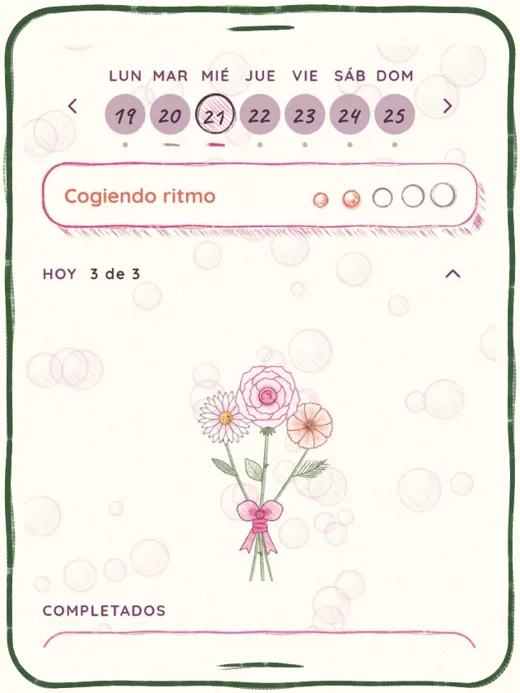

El mes, de un vistazo
Cada hábito tiene su calendario y un total de veces que nunca baja.
 Norday
Descargar
Norday
Descargar
Tres cosas, y ninguna te pide más de lo que tienes hoy.
Un toque y listo; otro toque lo deshace. Si no sabes por dónde empezar, te propone siete ideas listas.

Cada vez que cumples, tu ritmo sube. Si un día no llegas, baja poco a poco.

Cuando completas todo, la app te lo celebra. Con calma, sin fuegos artificiales.

Tres hábitos de ejemplo. Márcalos y mira cómo responde Nori. En la app es igual de sencillo.
Ejemplo de la web: no guarda nada.
Cada hábito le da experiencia. Empieza siendo un huevo, sale del cascarón y se hace mayor. Se despierta con tu primer paso del día.

Las identidades cambian la letra, las formas, los colores y el fondo de la app. Empiezas con una gratis; las demás cuestan 1.000 puntos, que ganas marcando hábitos. Pulsa una y mira esta página.
Ahora: la de la web
Cada hábito tiene su calendario y un total de veces que nunca baja.
De una a cinco estrellas, con una nota si quieres. Así ves qué hábitos te cuestan más.
Los puntos no caducan, lo que compras en la tienda se queda y tus totales también.
Solo guarda tu cuenta, tus hábitos y a Nori. Nada de salud, contactos, fotos ni mensajes.
Sí, y sin anuncios. Las identidades de la tienda se consiguen con los puntos que ganas marcando hábitos, no con dinero.
No pasa nada: no hay racha que se rompa. El día se queda vacío, sin rojo, y tu ritmo baja poco a poco hasta tu siguiente paso.
Sí. Tus hábitos se guardan en tu cuenta y no solo en el móvil, así que si cambias de teléfono entras con tu cuenta y lo tienes todo.
Todavía no. Por ahora Norday Habits es solo para Android.
En español, inglés y portugués.
Gratis, sin anuncios y sin compras. Para Android.